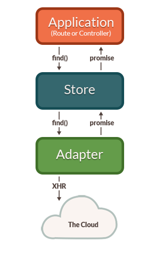
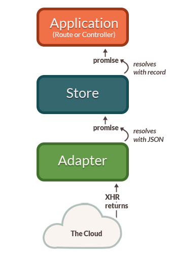
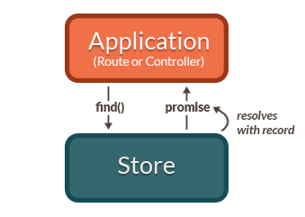

はじめに 編集
モデルは、ユーザーに見せるデータの基礎を表すオブジェクトです。 解決しようとしている問題に応じて、アプリ毎に様々なモデルが存在します。
例えば、写真共有アプリには、特定の写真を表すPhotoモデルと、写真集を表すPhotoAlbumがあったり、
オンラインショッピングアプリには、ShoppingCart(カート)、Invoice(請求書)、LineItem(カートに追加された商品)などの違ったモデルがあったりするでしょう。
モデルは永続化することが多いです。 永続化により、ユーザーがブラウザを閉じるのと同時にモデルデータを失うのを防ぐことができます。 データが失われないようにするには、ユーザーがモデルを変更した時に、そのデータを失われない場所に保存する必要があります。
一般的に、ほとんどのモデルはサーバからデータを取得し、サーバのデータベースに保存します。 HTTPサーバーとのモデルデータの送受信には、JSON形式がよく使われます。 ですが、Emberでは、IndexedDBを使用してユーザーのハードディスクに保存したり、他の耐久性のあるストレージや、独自のサーバーを作成しホストすることを避けることができるホスト型ストレージソリューションを簡単に使用できます。
モデルがストレージからロードされると、コンポーネントがモデルデータをユーザーが操作できるUIに変換します。 コンポーネントにモデルデータを渡す方法の詳細は、ルートのモデルを指定するを参照してください。
Ember DATAは、新しくアプリケーションを作成する際にデフォルトで含まれます。 Ember DATAはEmberと緊密に統合されたライブラリで、サーバーからモデルをJSON形式で取得したり、サーバーにデータの変更を保存したり、ブラウザ上でデータを作成するのを簡単にします。
Adapterパターンが使われているお陰で、いろんな種類のバックエンドでEmber Dataを使えるよう変更できます。 さまざまな種類のサーバーとのやり取りを可能にするアダプターがよく揃っているエコシステムがあるため、ライブラリを使えば自分でコードを書かなくて済むでしょう。
対応したアダプターがなくても(JSON仕様に準拠していない独自仕様のAPIサーバーなど)、Ember Dataは、サーバがどんな形式で返そうが、設定によって使えるように設計されています。
Ember Dataは、WebSocketのようなストリーミングサーバーとも使えるよう設計されています。 サーバーへのソケットを開き、変更が発生するたびにEmber Dataに変更をプッシュして、常に最新のリアルタイムのユーザーインターフェイスをアプリ上で提供することができます。
初めてEmber Dataを使う時に、それまでのJavaScriptアプリケーションの作成方法との違和感を感じるかもしれません。 よく、エンドポイントから生のJSONデータをAJAXで取得していた場合、一見その方が簡単そうですが、 時間の経過とともに、アプリケーションコードが複雑になると、そのやり方では保守が困難になるでしょう。
Ember Dataを使用すると、アプリケーションとしてのモデルの管理が容易になります。
Ember Dataを理解すると、アプリケーションでのデータの読み込みの複雑さをうまく管理するより良い方法を得られます。 それにより、コードを汚くすることなく書いていくことができるでしょう。
Storeと信頼できる唯一の情報源
訳注: a Single Source of Truthを信頼できる唯一の情報源と訳しています。
Webアプリ開発でよくあるやり方の1つに、ユーザーインターフェイス要素とデータ取得を密結合させるのがあります。 例えば、ブログアプリの管理画面を開発していて、ログイン中のユーザーの下書き一覧ページを作る場合...
以下のように、データをコンポーネントで取得するように書く気になるかもしれません。
| app/components/list-of-drafts.js | |
1 2 3 4 5 6 7 8 9 |
import Component from '@ember/component'; export default Component.extend({ willRender() { $.getJSON('/drafts').then(data => { this.set('drafts', data); }); } }); |
そして以下のように、コンポーネントのテンプレートで下書きの一覧を表示しようとします。
このやり方は下書き一覧のコンポーネントには最適です。
しかし、アプリに他にも色々なコンポーネントがある場合はどうでしょう。
他のページでは、下書きの数を表示するコンポーネントが必要かもしれません。
その場合、上記のwillRenderコードをそのコンポーネントにコピペしたくなるかもしれません。
| app/components/drafts-button.js | |
1 2 3 4 5 6 7 8 9 |
import Component from '@ember/component'; export default Component.extend({ willRender() { $.getJSON('/drafts').then(data => { this.set('drafts', data); }); } }); |
残念ながら、この例では、アプリは同じ情報に対して2つのリクエストが別々に発生します。 不必要なリクエストは、無駄な帯域幅やアプリのスピードに影響を及ぼすだけでなく、簡単に同期ずれを起こすでしょう。 おそらくあなた自身も、一覧の件数とがメニューバーの件数と同期しなくなってイライラするようなWebアプリをこれまでに使ったことがあるのではないでしょうか。
また、アプリケーションのUIとネットワークコードが密結合になっています。 URLやJSONの形式が変更された場合、UIコンポーネントが動かなくなり、しかも修正が必要なコンポーネントの把握に支障を来す可能性があります。
良い設計のために、SOLID原則はオブジェクトは単一の責任を持つべきだと教えています。 コンポーネントの責任は、モデルをフェッチするのではなく、モデルデータをユーザーに提示することです。
良く設計されたEmberアプリでは別の手段を取ります。 Ember Dataは、アプリケーションのモデルの中央リポジトリである単一のstore(ストア)を提供します。 コントローラーとルートはストアにモデルの問い合わせができます。 ストアの責任はモデルをフェッチする方法を知っていることです。
また、2つの異なるコンポーネントが同じモデルを要求していることをストアが把握できるため、アプリはサーバーからデータの取得を一度に済ませられます。 ストアは、モデルのリードスルーキャッシュと考えることもできます。 コントローラーとルートがストアにアクセスできます。 モデルを表示したり変更したりする必要があるときは、まずはストアを使いましょう。
JSON APIとCoC(設定より規約)
Emberの規約に頼ることで、コードの記述量と保守を大幅に減らすことができます。 規約はチームの開発者間で共有されるため、それによりコードの保守と理解をしやすくなります。
Ember Dataは、一連の規約を作るよりも、JSON APIですぐに動作するように設計されています。 JSON APIは、クライアントとサーバーがモデルデータを通信できるようにする、従来の堅牢で実績のあるAPIを構築するための正式な仕様です。
JSON APIは、JavaScriptアプリケーションとサーバーの対話方法を標準化しているため、 フロントエンドとバックエンドの結合度を減らし、技術スタックをより自由に変更できます。
SQLの「サーバー側のフレームワークとデータベース」の関係と同様に、JSON APIは「JavaScriptアプリケーションとAPIサーバー」の関係です。 Ruby on Rails、Laravel、Django、Springなどの人気のあるフレームワークは、MySQL、PostgreSQL、SQL Serverなど、さまざまなデータベースをすぐに使うことができます。
フレームワーク(とフレームワーク上に構築されたアプリケーション)を使う場合、データベースをサポートするためのコードをたくさん書く必要はありません。 そのデータベースがSQLをサポートしていれば、比較的簡単に使えます。
JSON APIもそうです。 JSON APIをEmberアプリケーションとサーバーで使用して相互運用することで、フロントエンドを壊すことなくバックエンドスタックを完全に変更できます。 また、iOSやAndroidなどの他のプラットフォーム用のアプリケーションも開発する時は、プラットフォーム用のJSON APIライブラリを活用することで、Emberアプリケーションが使用するAPIと同じAPIを簡単に使用できます。
モデル
Ember Dataでは、各モデルはModelのサブクラスとして定義します。
モデルには、ユーザーに提示するデータの属性や関係や動作を定義します。
モデルの属性には、サーバーから取得するデータの型を定義します。
例えば、Personモデルに、文字列のfirstName属性と、日付のbirthday属性がある場合、以下のように定義します。
| app/models/person.js | |
1 2 3 4 5 6 |
import DS from 'ember-data'; export default DS.Model.extend({ firstName: DS.attr('string'), birthday: DS.attr('date') }); |
モデルは、他のモデルとの関係も示します。
例えば、orderは多くのline-itemsを持ち、line-itemは特定のorderに属する場合は、以下のように定義します。
| app/models/order.js | |
1 2 3 4 5 |
import DS from 'ember-data'; export default DS.Model.extend({ lineItems: DS.hasMany('line-item') }); |
| app/models/line-item.js | |
1 2 3 4 5 |
import DS from 'ember-data'; export default DS.Model.extend({ order: DS.belongsTo('order') }); |
モデルはデータそのものを持たず、レコードと呼ばれる特定のインスタンスの属性、関係、動作を定義します。
レコード
レコードはモデルのインスタンスで、サーバーからロードされたデータを持ちます。 アプリ側でレコードを作成してサーバーに保存することもできます。
レコードは、そのモデルのタイプとIDによって一意に識別されます。
例えば、連絡先管理アプリケーションを作成していて、Personモデルがある場合、
個々のレコードは、タイプにpersonと、IDに1かsteve-buscemiを持つ、といった感じです。
1 |
this.get('store').findRecord('person', 1); // => { id: 1, name: 'steve-buscemi' } |
IDは通常、初めてレコードを保存するときにサーバーによってレコードに割り当てられますが、IDをクライアント側で生成することもできます。
アダプター
アダプターは、Emberからの要求(「IDが1のユーザーを見つける」など)をサーバーへのリクエストに変換するオブジェクトです。
例えば、アプリケーションがIDが1のPersonを要求した場合、
HTTPまたはWebSocket経由なのか、HTTPの場合はURLは/person/1または/resources/people/1なのかなど、
Emberはそれをどのようにロードするかの判断が必要です。
アダプターはそれらの問いにすべて答える責任があります。 キャッシュされていないレコードをストアに要求すると、アダプターにその要求がいきます。 レコードを変更して保存すると、ストアはレコードをアダプターに渡して、適切なデータをサーバーに送信し、保存が成功したことを確認します。
アダプターを使用すると、Emberアプリケーションコードに影響を与えずにAPIの実装方法を完全に変更できます。
キャッシュ
ストアは自動的にレコードをキャッシュします。 レコードがすでにロードされている場合、2回目以降の要求には、常に同じオブジェクトインスタンスが返されます。 これにより、サーバーへのラウンドトリップ回数が最小限に抑えられ、UIをユーザーにできるだけ速く表示できます。
例えば、IDが1のpersonレコードをストアに初めて要求すると、サーバーからその情報がフェッチされます。
しかし、IDが1のpersonを再度要求すると、ストアはその情報はすでにサーバから取得されキャッシュされていることに気づき、
同じ情報に対して新たにリクエストをサーバに送信するのではなく、最初に提供したのと同じレコードを返します。
何度見ても常に同じレコードオブジェクトを返すこの機能は、アイデンティティマップと呼ばれることがあります。
アイデンティティマップを使用することは、UIの一部で行った変更をUIの他の部分に確実に反映するのために重要です。 また、手動でレコードを同期させる必要がないことも意味します。 アプリケーション内の他のところでロードされたかどうかを心配する必要なく、IDでレコードを要求できます。
キャッシュされたレコードを返すことの1つの欠点は、データの状態が最初にストアのアイデンティティマップにロードされてから同期されないことです。 この古くなったデータが長い時間問題にならないようにするために、Ember Dataはキャッシュしたレコードをストアから返す度に、自動的にリクエストをバックグラウンドで行います。 新しいデータが取得されると、レコードが更新され、最初のレンダリング以降にレコードが変更された場合、テンプレートは新しい情報で再レンダリングされます。
アーキテクチャの概要
ストアにレコードを初めて要求すると、ストアはローカルコピーを持っていないため、アダプターに要求します。 アダプターは永続性レイヤーからレコードを取得します。 一般的に、永続性レイヤーはHTTPサーバーでレコードをJSONとして表します。

上の図に示すように、アダプターは要求されたレコードをいつもすぐに返すことはできません。 この場合、アダプターはサーバーに対して非同期要求を行わなければならず、その要求のロードが完了した時にのみ、データを元にレコードを作成することができます。
非同期であるため、ストアのfindRecord()メソッドはPromiseをすぐに返します。
同様に、ストアがアダプターに対して行う要求も、Promiseを返します。
サーバーへの要求に、要求したレコードのJSONペイロードが返されると、アダプターはストアに返したPromiseを解決してJSONを渡します。
その後、ストアはアダプターから渡されたSONデータでレコードを初期化し、アプリケーションに返したPromiseに解決して、新しくロードされたレコードを渡します。

ストアにキャッシュにあるレコードをリクエストするとどうなるかを見てみましょう。

この場合、ストアが既にそのレコードについて知っていたので、Promiseを返し、そのPromiseはすぐにそのレコードで解決されます。 アダプター(サーバー)にデータを求める必要はありません すでにローカルに保存されているためです。
モデル、レコード、アダプター、ストアは、Ember Dataを最大限に活用するために理解しておくべき基本的な概念です。 この後のセクションでは、これらの概念についてそれぞれ深く理解し、それらを一緒に使用する方法について説明します。